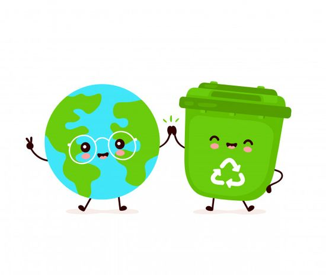
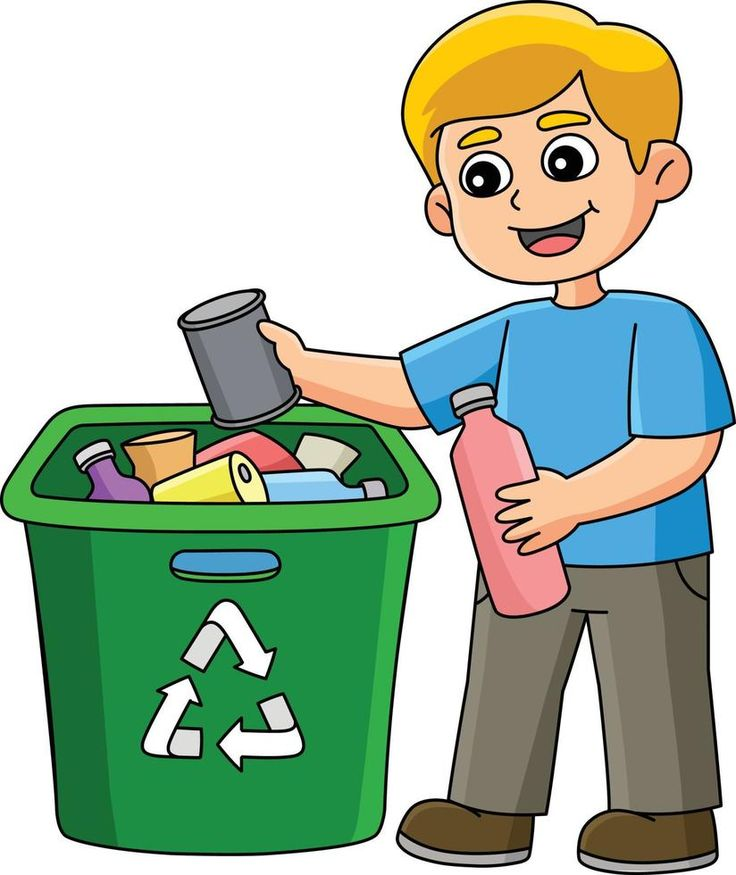
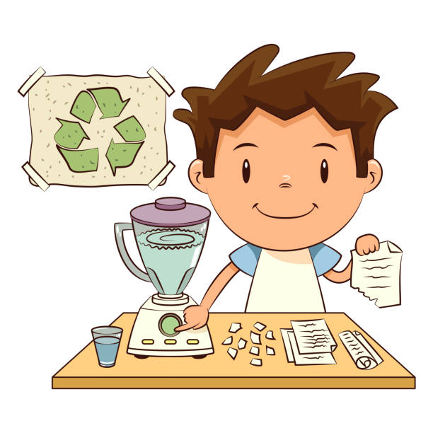
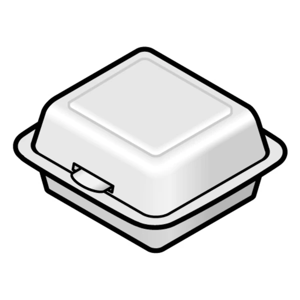

¿Qué es el reciclaje?
El reciclaje es el proceso de convertir materiales desechados en nuevos productos. Ayuda a reducir residuos,
conservar recursos y ahorrar energía. Involucra la recolección, clasificación, procesamiento y creación de
productos nuevos a partir de materiales como papel, plástico, vidrio y metales. Aunque enfrenta desafíos
como la contaminación de materiales y los costos de infraestructura, es crucial para la sostenibilidad
ambiental.

¿Qué Buscamos?
Como proyecto para apoyar al Colegio buscamos alternativas para fomentar el reciclaje de materiales muy
utilizados dentro de la institución.
Nuestra propuesta se ve mostrada en una estación con botes en la que podamos separar la basura para
posteriormente llevarla a un centro de reciclaje.

¿Cómo Nos Puedes Ayudar?
Esperamos que los alumnos y docentes del Colegio puedan apoyarnos depositando sus desechos en los
espacios correspondientes. También, lo más necesario es que podamos ayudar a los demás a aprender a
separar toda la basura correctamente para que nuestro proyecto funcione de mejor manera.

¿Te gustaría hacer una manualidad con reciclado?
Para la idea que vamos a aportar tomamos en en cuenta materiales que se utilizan mucho en el Colegio y
se pueden conseguir fácilmente.

Cartón
La forma de cartón más utilizada en el Colegio son con los envases de "Boing", sin embargo también en
cajas que ya no utilices, te invitamos a depositarlos en el espacio que tenga el título "Cartón".

Papel
El papel no es difícil de identificarlo en la escuela, todas nuestras libretas están hechas a partir de
él, y por ello es muy importante que cuando una hoja sea desprendida o ya no se deseé tenerla, se
deposite en el espacio con título "Papel" para poder reciclarla y convertirla en una hoja nueva.

Plástico
Las envolturas las podemos encontrar como los empaques de cualquiera de los dulces que compramos en la
cafetería escolar, lo que hace que se genere mucho de este desecho. Y de igual manera, los tenedores,
cucharas o cuchillos desechables que utilices para comer, por favor deposítalos en el espacio con nombre
"Plástico".

Unicel
El unicel es el material más utilizado para servir los alimentos que se venden en la cafetería, y es el
material más contaminante que debemos deshechar, este deposítalo en el espacio con nombre "Unicel".
¿Te gustaría hacer una manualidad con reciclado?
Te damos un par de ideas con materiales y pasos para que te motives a reciclar de manera creativa.
Más Ideas Aquí
Materiales Necesarios:
• Rollos de papel higiénico o toallas de papel
• Botellas de plástico
• Latas de aluminio
• Arroz o lentejas (para el relleno)
• Pegamento
• Pinturas y rotuladores
Instrucciones:
1. Para hacer maracas, llena botellas de plástico con arroz o lentejas y ciérralas bien.
2. Para hacer tambores, usa latas de aluminio y cubre la parte superior con papel o tela tensa.
3. Decora los instrumentos con pinturas o rotuladores.
¡Ayuda a salvar al planeta!
“Reciclar es darle una segunda vida a las cosas y una nueva oportunidad al planeta.”
-Anónimo